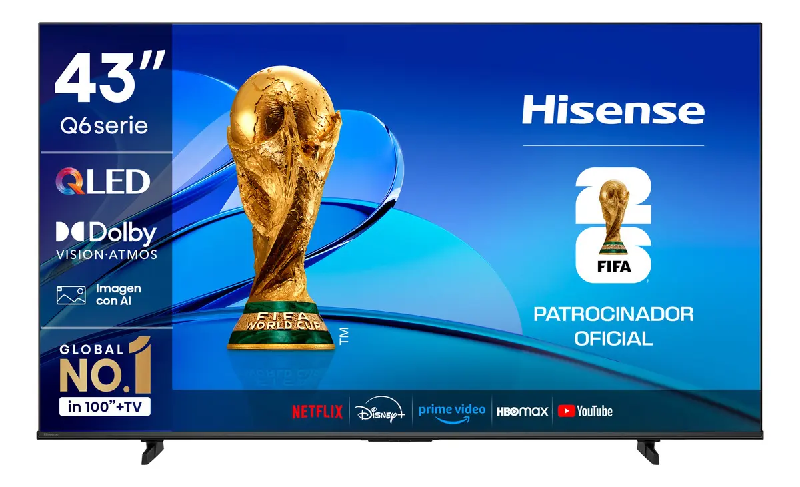
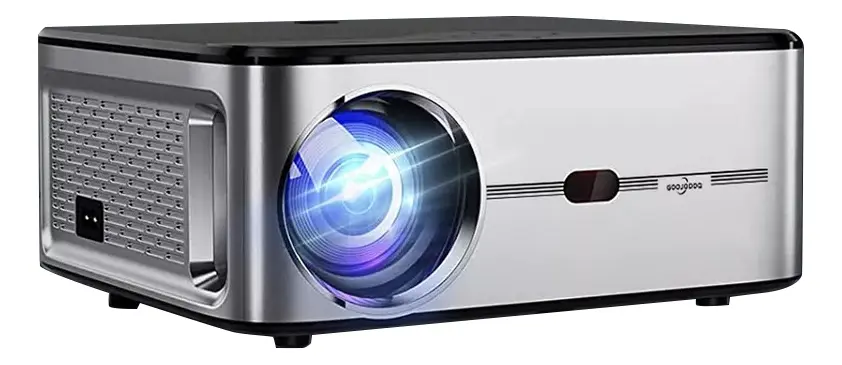

Cómo elegir audífonos inalámbricos
Revisa autonomía, comodidad, tipo de conexión y uso antes de tomar una decisión.
Leer resumenConsejos simples para elegir y cuidar tus dispositivos electrónicos.
Revisa autonomía, comodidad, tipo de conexión y uso antes de tomar una decisión.
Leer resumen
Considera el espacio disponible, resolución, conexiones y aplicaciones que necesitas.
Leer resumen
Buenas prácticas sencillas ayudan a extender la vida útil de tus dispositivos.
Leer resumenPrioriza un modelo cómodo para el tiempo que los usarás. También revisa duración de batería, calidad del micrófono y compatibilidad con tu teléfono.
Mide el espacio donde lo instalarás y busca conexiones HDMI suficientes. Un televisor inteligente permite acceder a aplicaciones de contenido desde una misma pantalla.
Utiliza cargadores compatibles, evita temperaturas extremas y desconecta el equipo cuando notes calentamiento excesivo.